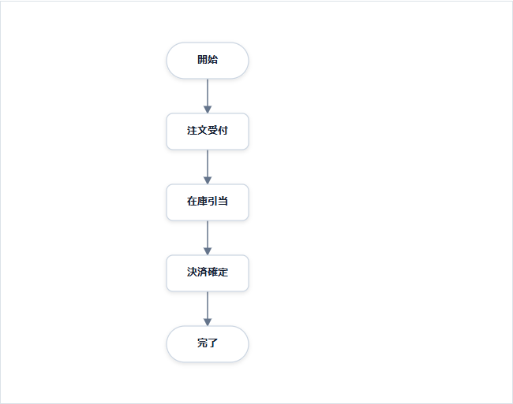
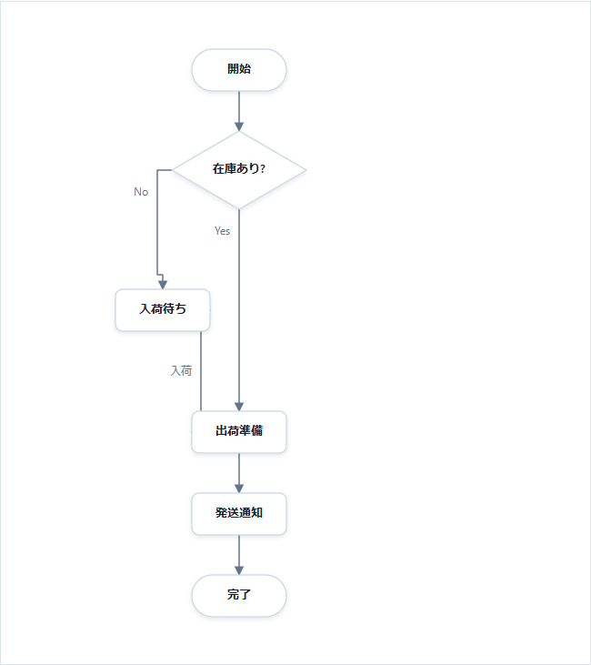
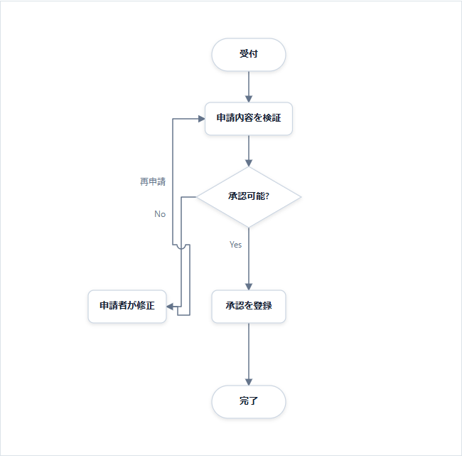
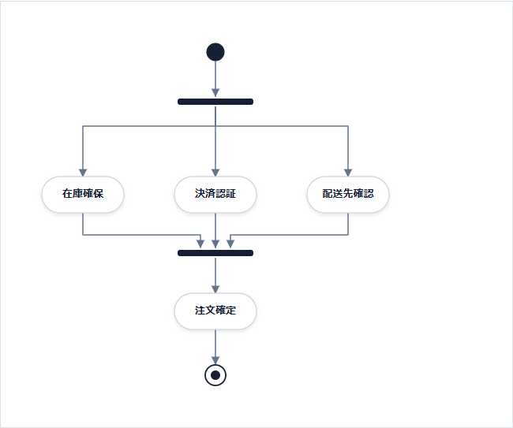
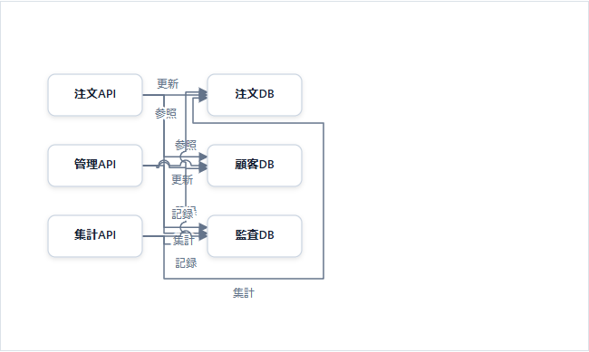
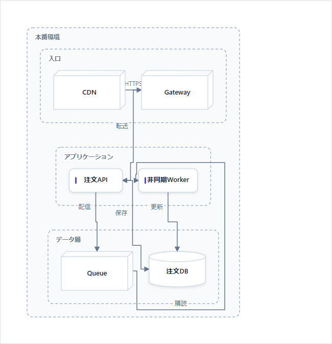
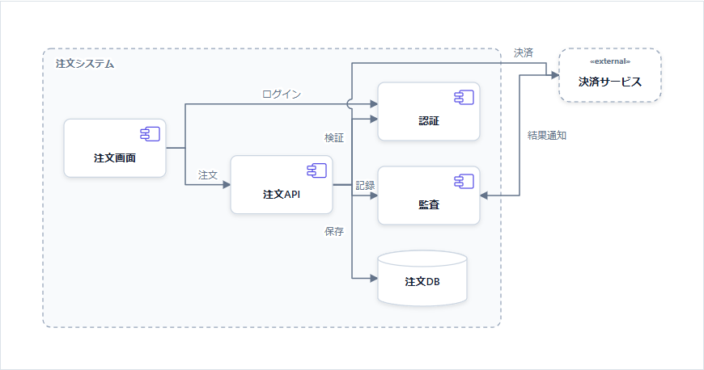
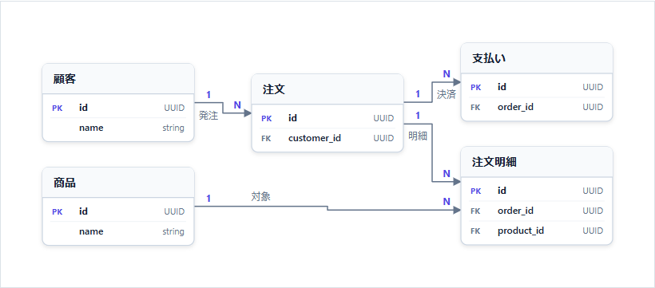
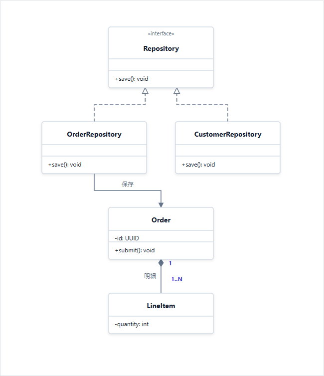
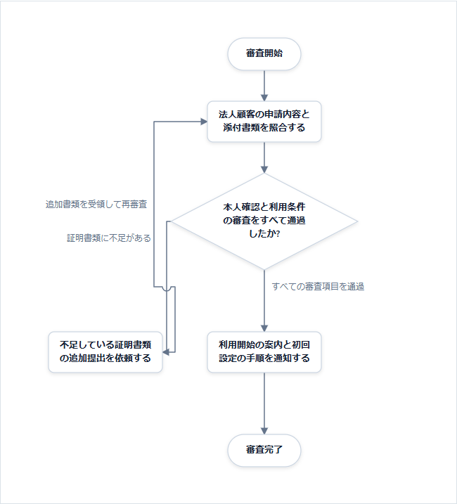

配置・ルーティング評価 — 第1回
10例を生成し、描画結果を目視採点。評価方法のすり合わせ用の暫定評価です。図の名前からHTML、PNGから初回の固定画像を開けます。
配置・経路・ラベル・空間を各5点、計20点。5＝支障なし、4＝軽微、3＝追い直しが必要、2＝繰り返し迷う、1＝主目的を阻害、0＝描画不能／必要情報欠落。
交差数より接続の追いやすさを重視し、意味に沿ったforkの共有線は減点しません。図種間の順位付けではなく、今後の同一ケース比較の基準です。
2026-09-12 · 初期自動配置 · 手動修正なし · 全10例の構文検証成功／ブラウザーエラー0件
06のみ階層内のrow/column指定あり。空間評価はSVG自身を対象とし、ページ外枠の余白は除外。採点はCodexによる観察で、追跡時間の測定ではありません。
詳細な評価基準と論点 · 採点JSON · 寸法・geometry
| 作成した図 | 配置 / 経路 /
ラベル / 空間 | 合計 | 判定 | 採点理由 |
|---|
01-linear
直列処理
PNG · SVG
476 × 462 | 5 / 5 / 5 / 4 | 19/20 | 良好 | 全5ノードが同じ中心軸に並び、4本の接続が直線。文字の欠けなし。空間−1：図自身の幅476pxに対しノード幅は約104pxで、左右の余白が大きい。 |
02-branch
分岐・合流
PNG · SVG
476 × 680 | 5 / 5 / 5 / 3 | 18/20 | 良好 | 開始→在庫判断→出荷→通知→完了が同一軸。No側の待機と合流も識別でき、Yes/Noは分岐付近にある。空間−2：待機を中間段に置くためYesの直通線が長く、6ノードで高さ680pxになる。 |
03-retry
再試行ループ
PNG · SVG
476 × 590 | 5 / 3 / 5 / 4 | 17/20 | 調整候補 | 承認の主経路は一直線で、修正を左に分離。経路−2：Noの下降線と再申請の戻り線が修正ノード右上で交差し、近接した折り返しを追う必要がある。空間−1：修正側の線が細い通路に密集する一方、外周に余白が残る。 |
04-parallel
並列状態
PNG · SVG
496 × 492 | 5 / 5 / 5 / 5 | 20/20 | 良好 | fork→3状態→join→確定が上下に並び、3状態の高さと間隔も揃う。joinへの矢印は離れて到着し、並列区間が一目で分かる。fork後の共有線は並列分岐の意味と整合し減点しない。長い経路ラベルの耐性はこの例では未評価。 |
05-dense
密な依存関係
PNG · SVG
360 × 337.6 | 4 / 1 / 2 / 3 | 10/20 | 要改善 | API列とDB列は明確。配置−1：中央の接続量に対して列間が狭い。経路−4：中央で多数の縦線・横線・ジャンプが密集し、個別の接続先を連続して追いにくい。ラベル−3：参照・更新・記録・集計が近接し、どの線の文字か判別しにくい。空間−2：中央を圧縮したまま右・下に迂回し、小面積でも読みやすさに結び付いていない。 |
06-deployment
入れ子の配置図
PNG · SVG
472 × 622 | 4 / 2 / 4 / 4 | 14/20 | 調整候補 | 入口・アプリケーション・データ層の階層は明確。配置−1：注文APIの下がQueue、Workerの下がDBとなり、保存と購読が回り込む。経路−3：Gatewayからの転送、APIの保存、Queueからの購読が中央と外周を使い、特に購読はデータ層の下から右端を大回りする。ラベル−1：転送・配信・保存を近接する縦線と対応付ける必要がある。空間−1：枠内に余白がある一方で中央通路が狭い。 |
07-component
共通部品への依存
PNG · SVG
820 × 407 | 5 / 3 / 5 / 4 | 17/20 | 調整候補 | 画面→API→内部部品の左から右への依存と、外部決済の境界が明確。経路−2：API右の縦通路を認証・監査・DB・決済への線が共有し、上部でログイン線と交差するため分岐元を追い直す必要がある。ラベルは読める。空間−1：外部決済への上方迂回で横幅820pxになり、外部側下部の空白が大きい。 |
08-er
注文データモデル
PNG · SVG
770 × 309.625 | 5 / 4 / 5 / 5 | 19/20 | 良好 | 顧客→注文→支払い／明細の関係が左から右へ流れ、商品も明細に直接接続する。関係名と1/Nを区別して読める。経路−1：商品→明細が途中でわずかに段差を作る。両者の接続高さを揃えれば、より単純な線にできそう。 |
09-class
継承と関連
PNG · SVG
596 × 703 | 4 / 5 / 5 / 4 | 18/20 | 良好 | Repositoryを上に置き、実装2クラスを同じ段に配置。実現の破線・関連の矢印・合成の菱形、多重度を識別できる。配置−1：OrderがOrderRepositoryの真下ではなく全体中央に置かれ、保存の線に横移動が入る。空間−1：CustomerRepositoryの下に大きい空白が残る。 |
10-long-label
長文の判断・経路名
PNG · SVG
525 × 666 | 5 / 3 / 4 / 4 | 16/20 | 調整候補 | 長い処理名は枠内で折り返され、正常経路と書類追加の枝も分離している。経路−2：不足の枝と再審査の戻り線が左側で交差し、狭い折り返しになる。ラベル−1：戻り線のラベルが長い縦線の中央にあり、矢印から離れているため方向と対応を追い直す。空間−1：左側の長い経路ラベル用の幅と中央判断の幅が重なり、通路の余裕が少ない。 |
確認したい採点判断- 05の接続追跡困難を重く見て10/20・要改善とする。
- 03・10のジャンプ付き交差を、経路3/5とする。
- 02の主軸維持に伴う長い直通線を、空間3/5とする。
- 配置と空間の影響が重なる場合の二重減点を許容するか。
次回は採点方針を確定してから、同じケースの変更前後を比較します。今回の図と得点は基準版として保存します。
初回描画の一覧
01-linear 直列処理 — 19/20

全5ノードが同じ中心軸に並び、4本の接続が直線。文字の欠けなし。空間−1：図自身の幅476pxに対しノード幅は約104pxで、左右の余白が大きい。
02-branch 分岐・合流 — 18/20

開始→在庫判断→出荷→通知→完了が同一軸。No側の待機と合流も識別でき、Yes/Noは分岐付近にある。空間−2：待機を中間段に置くためYesの直通線が長く、6ノードで高さ680pxになる。
03-retry 再試行ループ — 17/20

承認の主経路は一直線で、修正を左に分離。経路−2：Noの下降線と再申請の戻り線が修正ノード右上で交差し、近接した折り返しを追う必要がある。空間−1：修正側の線が細い通路に密集する一方、外周に余白が残る。
04-parallel 並列状態 — 20/20

fork→3状態→join→確定が上下に並び、3状態の高さと間隔も揃う。joinへの矢印は離れて到着し、並列区間が一目で分かる。fork後の共有線は並列分岐の意味と整合し減点しない。長い経路ラベルの耐性はこの例では未評価。
05-dense 密な依存関係 — 10/20

API列とDB列は明確。配置−1：中央の接続量に対して列間が狭い。経路−4：中央で多数の縦線・横線・ジャンプが密集し、個別の接続先を連続して追いにくい。ラベル−3：参照・更新・記録・集計が近接し、どの線の文字か判別しにくい。空間−2：中央を圧縮したまま右・下に迂回し、小面積でも読みやすさに結び付いていない。
06-deployment 入れ子の配置図 — 14/20

入口・アプリケーション・データ層の階層は明確。配置−1：注文APIの下がQueue、Workerの下がDBとなり、保存と購読が回り込む。経路−3：Gatewayからの転送、APIの保存、Queueからの購読が中央と外周を使い、特に購読はデータ層の下から右端を大回りする。ラベル−1：転送・配信・保存を近接する縦線と対応付ける必要がある。空間−1：枠内に余白がある一方で中央通路が狭い。
07-component 共通部品への依存 — 17/20

画面→API→内部部品の左から右への依存と、外部決済の境界が明確。経路−2：API右の縦通路を認証・監査・DB・決済への線が共有し、上部でログイン線と交差するため分岐元を追い直す必要がある。ラベルは読める。空間−1：外部決済への上方迂回で横幅820pxになり、外部側下部の空白が大きい。
08-er 注文データモデル — 19/20

顧客→注文→支払い／明細の関係が左から右へ流れ、商品も明細に直接接続する。関係名と1/Nを区別して読める。経路−1：商品→明細が途中でわずかに段差を作る。両者の接続高さを揃えれば、より単純な線にできそう。
09-class 継承と関連 — 18/20

Repositoryを上に置き、実装2クラスを同じ段に配置。実現の破線・関連の矢印・合成の菱形、多重度を識別できる。配置−1：OrderがOrderRepositoryの真下ではなく全体中央に置かれ、保存の線に横移動が入る。空間−1：CustomerRepositoryの下に大きい空白が残る。
10-long-label 長文の判断・経路名 — 16/20

長い処理名は枠内で折り返され、正常経路と書類追加の枝も分離している。経路−2：不足の枝と再審査の戻り線が左側で交差し、狭い折り返しになる。ラベル−1：戻り線のラベルが長い縦線の中央にあり、矢印から離れているため方向と対応を追い直す。空間−1：左側の長い経路ラベル用の幅と中央判断の幅が重なり、通路の余裕が少ない。